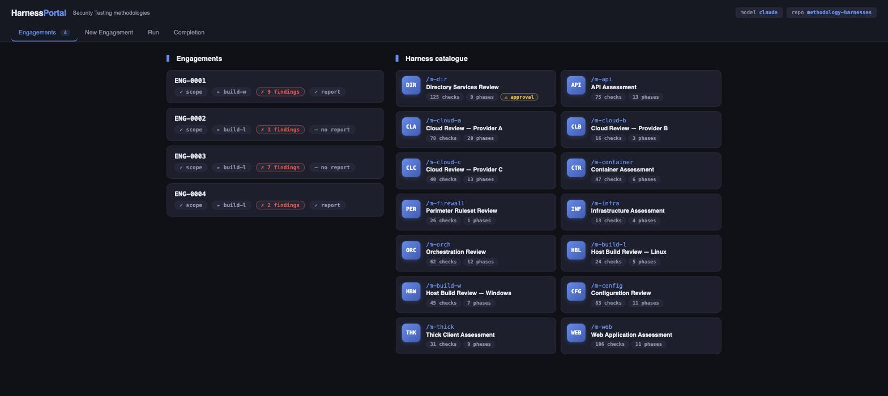

How to build a testing harness on top of Anthropic's Claude — turning a methodology document into fourteen executable skills, with scope enforced before anything runs and a human approving every command.

Every methodology I test against exists as a document — a spreadsheet of checks grouped into phases, the thing you are audited against and the thing a client's report is implicitly promising you covered. It is also, structurally, a specification. That makes it the ideal input for a harness, and this is a write-up of how to build one.
The single decision that makes this work: nobody writes the harnesses. A generator reads the methodology spreadsheet and emits one skill per tab, plus a YAML checklist per methodology, plus per-harness documentation. Fourteen came out the other side — a Directory Services Review at 125 checks across 9 phases, a Web Application Assessment at 106 across 11, a Configuration Review at 83, cloud reviews split per provider, plus API, containers, orchestration, perimeter rulesets, infrastructure, thick client, and Windows and Linux host build reviews. (Names and references here are generic stand-ins; the structure is what matters.)
When the methodology is revised, you re-run the generator. Files carrying a
GENERATED banner are overwritten; the hand-written docs and the intake
skill are left alone. A harness that drifts from the document it claims to implement is
worse than no harness, and the only reliable defence is making the document the source
and regeneration cheap.
PATH.The portal streams a run live — assistant reasoning, tool calls, collapsible tool output — and in supervised mode, which is the default, every single system command stops and waits for an explicit Approve, Approve-for-the-rest-of-this-run, or Deny. Auto mode exists and is opt-in per run.
This is the part I would push hardest on if you are building something similar. The temptation is to treat approval as friction to be optimised away, and for the first twenty commands of a run it genuinely is. But the failure mode of an agent with a shell on somebody else's network is not "it does the job badly" — it is "it does something outside scope, and the engagement and possibly the relationship is over". A prompt instructing the model to stay in scope is a request. An approval gate is a control.
The portal is a thin shell over the harness repository. Methodologies, engagement state, evidence, findings and reports all live as files in that repo, so the web UI and the Claude Code CLI are fully interchangeable — a run started in one is visible in the other, and the portal can be shut down without losing anything. Engagement data is git-ignored and stays local.
That falls out of a design rule worth stealing: the agent's state should be files, not a database and not conversation history. Files can be inspected, diffed, backed up, and edited by hand when the agent gets something wrong — and the last of those matters more than it sounds.
The pattern generalises well beyond security testing, to anything with a checklist and a consequence for getting it wrong. Roughly:
1. Find the document that already defines the work and treat it as the
specification.
2. Generate one skill per unit of work; never hand-maintain them.
3. Put the preconditions in code, before the model gets control.
4. Make the state files in a repo.
5. Gate every irreversible action on a human, and make the reasoning
visible enough that approving is an informed decision rather than a reflex.
6. Require evidence for every claim, so the output is checkable by
somebody who wasn't watching.
The interesting result is that steps 3 and 5 are what make step 2 safe. Given hard boundaries it cannot cross, the model can be trusted with a great deal of autonomy inside them — and that is a much better trade than a heavily-constrained prompt and a hope.